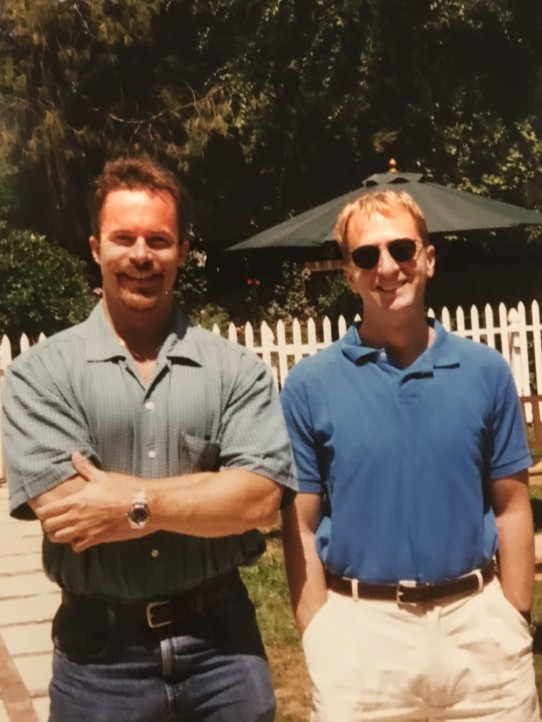

Introduction
Aspace once existed, where many early web users teased out their relationship with the web. On logging on to GeoCities a 2D space opened, where your presence was represented as neighborhoods which you would hop into and become part of a community. This space set the foundation of blogging sites and social networking as we know it today, A space that James Dladla would have flourished in were it not for the digital divide.
David Bohnett and John Rezner
Beverly Hills, a startup by David Bohnett and John Rezner has shaped online website hosting and website development as we know it today. The pair pursued to open website hosting by envisioning a digital space as colossal as AOL, yet open to the whole world. In addition to allocating each new user a free 15MB hosting space, they further categorized the users according to “genres” of content, as it were a collection of cities or neighborhoods.
These ‘Cities’ were Hollywood, a celebrity and fans site, Area51 a science fiction site, and Beverly Hills, a fashion and shopping site. This categorization relates closely to how drag and drop website development sites like Wix and GoDaddy use themes that are already categorized into areas of interest. Born out of the concept of cities, the company was renamed Geocities.
If 64-year-old James Dladla were to make his own website without the help of his grandson what tools would he use? Growing up at a time where computers were very rare in southern Africa and exacerbated by the digital divide and the prejudices of the apartheid bantu education system, James is a technology alien. Yet, the affordances of drag and drop tools started by GeoCities and grew into hosting services like GoDaddy, James can now make his own website.
James would choose the photography ‘City’ and customize the theme without worrying about the under-the-hood CSS look and feel, and how JavaScript is being modified to suit the functionality of his website.
Until 1999, GeoCities categorized its websites into pages that followed the following scheme: GeoCities.com/neighborhood/number starting with number 1000 and counting to 9999 GeoCities. (1999
Figure 1: An example of a themed GeoCity. Found at https://www.oocities.org/televisioncity/1037/
In the early 90s, a free 15MB web hosting space was lavish, a DIY website using drag and drop tools was cutting edge technology, and online presence was still reserved for the few elite. Yet, GeoCities opened the world of the web to everyone, and thus, growing the company phenomenally. This suddenly opened digital ecosphere to users and novice web content producers and developers. GeoCities become the one stop shop of website publishing without the albatross of HTML and FTP fluency requirements.
The affordance of control over the look and feel and space gave the web dwellers a voice, a tone and a pitch. This was a shift from mainstream media, which was built on the effects model/ the hypodermic (needle) model as reflected upon by O'sullivan et al (1994). This model assumed the passiveness of the audience (content producers in this case).
Figure 2: The Hypodemic needle Theory.
The acquisition of GeoCities by the internet giant Yahoo In 1999 ensured that company’s exponential financial growth, only for its doors to be shut down 10 years late. If James Dladla’s website was being hosted by GeoCities, he would have lost his digital footprint in In October 2009, where thousands of bare HTML pages collected on "GeoCities.com” were taken down.
Conclusion
For a few thousand web communities and cities, achievers saved total of 650GB of family photos, GIFs, and newsletters. The aim of the achievers was to s save those pages which they considered worthy and unique, especially the websites with the scientific and the historical content. if James were to hos his site in that era, he would have lost his works since photography would not have been regarded as important. Interestingly, if James would have produced his photographs of the 1976 Soweto uprisings, maybe the achiever would have considered them as historic artifacts. The process of archiving GoeCities raises questions of who tells the internet world what should be regarded as important and not.
Bibliography
GeoCitis. (1999). Retrieved 25 March 2021, from https://www.oocities.org
Hoffmann, J. (2018). An Ode to Geocities - The History of the Web. Retrieved 24 March 2021, from https://thehistoryoftheweb.com/an-ode-to-geocities/
O'sullivan, T., Hartley, J., Saunders, D., Montgomery, M., & Fiske, J. (1994). Key concepts in communication and cultural studies (p. 267). London: Routledge.